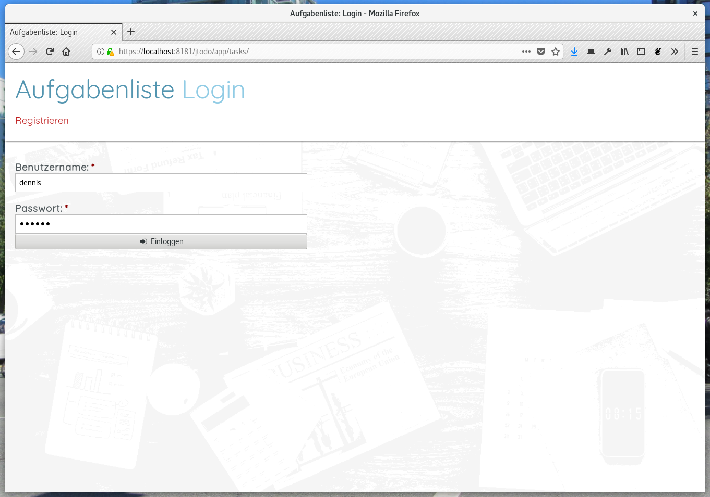
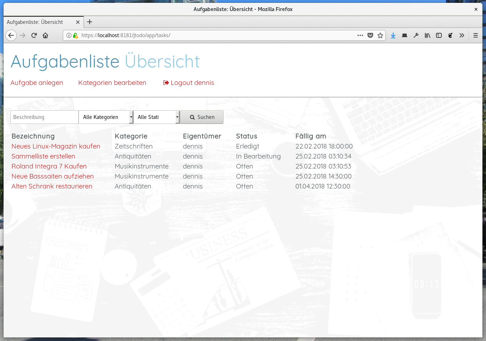
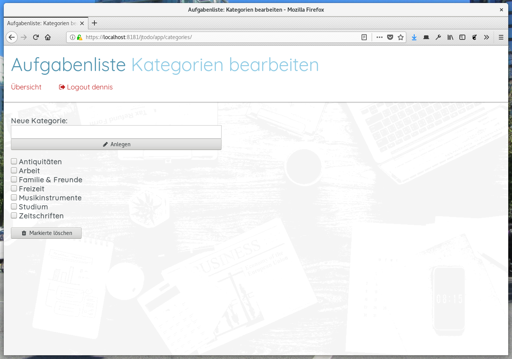
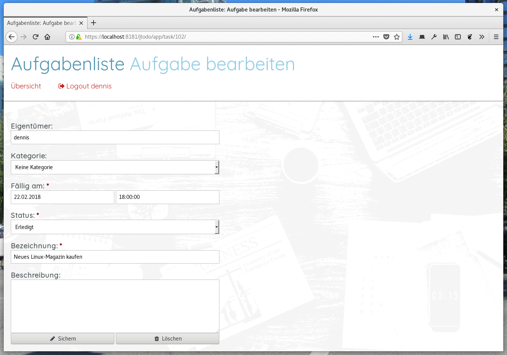

Diese Aufgabe soll dir helfen, dich auf die praktische Programmieraufgabe nächste Stunde vorzubereiten. Gleichzeitig solle sie natürlich auch ein wenig deinen Lernerfolg prüfen und feststellen, wie gut du dich in Java EE zurechtfindest. Doch keine Angst, auch wenn sich viele Fragen auf Themen beziehen, die wir nicht behandelt haben, sind sie alle mit einem geübten Blick auf den Quellcode und etwas Nachdenken gut lösbar. 😇
Die Anwendung, um die es hier geht, ist eine kleine Aufgabenliste. Nicht groß, aber immerhin mit Benutzerverwaltung und der Möglichkeit, die Aufgaben in beliebigen Kategorien zu ordnen. Die nachfolgenden Bilder zeigen die Anwendung.
|  |  |
|  |  |
Bevor du dich auf die Fragen und in den Quellcode stürzt, 🤸 solltest du die Anwendung erst zum Laufen bringen. Denn aufgrund der Benutzerverwaltung sind hierfür ein paar manuelle Schritte erforderlich. Importiere daher das Projekt „jTodo” in Netbeans und führe danach folgende Schritte aus:
| Name: | todo-app |
| Class Name: | ….JDBCRealm |
| JAAS Context: | jdbcRealm |
| JNDI: | jdbc/__default |
| User Table: | jtodo.jtodo_user |
| User Name Column: | username |
| Password Column: | password_hash |
| Group Table: | jtodo.jtodo_user_group |
| Group Table User Name Column: | username |
| Group Name Column: | groupname |
| Passwort Encryption Algorithm: | SHA-256 |
| Assign Groups: | todo-app-user |
Beantworte die folgenden Fragen zu der Webanwendung. Die Antworten müssen bis zum mitgeteilten Zeitpunkt als PDF-Dokument 📑 in Moodle eingereicht werden. Alle Fragen müssen von dir selbst ohne fremde Zuhilfenahme beantwortet werden, da es sich um eine benotete Einzelleistung handelt. Jede Aufgabe wird mit 5 Punkten bewertet. Maximal können 15 Punkte erreicht werden. Fasse dich in den Antworten kurz.
¹ Nur die Definition der Rolle ohne Zuweisung zu einem URL-Bereich. Ebenso kannst du die Datei glassfish-web.xml außen vor lassen, in der unter „Security” noch eine neues „Security Role Mapping“ angelegt werden müsste, damit es wirklich funktioniert.
Zur Überprüfung der Benutzereingaben werden nur teilweise manuell ausprogrammierte if-Anweisungen im Quellcode verwendet. Die meisten Prüfungen werden durch zusätzliche Annotationen in den Entity-Klassen sowie einer kleinen Hilfsmethode in der Klasse ….ejb.ValidationBean vorgenommen. Es handelt sich dabei um die Bean Validation API von Java EE.